Strasbourg
Bienvenue à Strasbourg
Été comme hiver, la plus germanique des villes françaises étonne grâce à la richesse de son patrimoine, la qualité de ses musées et le charme incomparable de son centre historique. Si les maisons à colombages de la Petite France, clichés de l'Alsace éternelle, sont bel et bien réelles, les atouts de Strasbourg dépassent très largement le cadre de la culture régionale. Ville-charnière, à la croisée des chemins (son nom signifie exactement : « cité des routes »), Strasbourg brasse avec bonheur toutes les influences culturelles et architecturales, du classicisme français à l'impérial allemand.
Alsacienne en profondeur, magnifiquement éclectique, ouverte culturellement et idéalement placée, Strasbourg est sans aucun doute la ville qui répond le mieux symboliquement au titre de « capitale de l'Europe ». L'art de vivre strasbourgeois est légendaire. Côté plaisirs de bouche, Strasbourg excelle, avec quantité de restaurants et de salons de thé. Écologique avant l'heure, elle séduit aussi par sa dimension humaine : le centre historique, presque entièrement piétonnier, permet toutes les flâneries à pied ou, encore mieux, à vélo !
Les lieux à visiter
-
Cathédrale Notre-Dame
Il a fallu quatre siècles à la cathédrale pour s'offrir de façon si majestueuse à nos yeux, lorsqu'on la découvre par la rue Mercière. Des milliers de pages ne suffiraient pas à la décrire, la raconter, l'expliquer. Observez-la bien, elle vous bouleversera. Du haut de ses 142 mètres, elle toise l'horizon et tutoie le ciel. Sa construction résulte de mille ans d'architecture religieuse. Les premiers travaux remontent à 1015 et prennent la forme d'une cathédrale romane. Celle-ci ne cessera d'être agrandie et modifiée, au fil des siècles et des campagnes de construction, intégrant plusieurs influences architecturales. Son histoire, tumultueuse, la fait passer au culte protestant en 1529, puis revenir au culte catholique, en 1681 sous Louis XIV. Les incendies ne l'épargnent pas au Moyen Âge et plus récemment, elle est endommagée par les obus prussiens (1870), puis par les bombes américaines (1944). Pollution oblige, la plupart des statues qui la décorent sont des copies ; les originaux ont été transférés au musée de l'Œuvre Notre-Dame. Mais le charme reste total. On est frappé par la taille de la rosace achevée en 1318 (12 mètres de diamètre) et par sa composition en 16 pétales géminées.
Elle chapeaute un autre chef-d'œuvre : le portail central, qui relate la Passion du Christ (tympan) et évoque des scènes de l'Ancien et du Nouveau Testament (voussures). Les sculptures semblent hésiter entre profane et sacré : les prophètes d'Israël et le Jugement dernier prennent néanmoins le dessus sur cet odieux personnage qui baisse son pantalon et vous montre l'orifice de son séant ! Sur les portails latéraux, le temps a figé les discussions des Vierges folles et sages face au divin Époux ; un peu plus loin, les Vertus terrassent les Vices et le Tentateur ironise en tenant la fameuse pomme. Ceux qui ne connaissent pas le vertige se lanceront à l'ascension de la plate-forme (332 marches) pour admirer l'époustouflant panorama sur la cité et la plaine du Rhin et étudier d'un peu plus près cette fameuse flèche… À l'intérieur, même ravissement : le pilier des anges (XIIIe siècle) fait face à la plus célèbre horloge astronomique d'Europe, véritable chef-d'œuvre de mécanique construit entre 1571 et 1574, et attraction de la cathédrale, dont on ne manquera pas non plus le ballet des automates (grand défilé à 12h30 : le Christ saluant les douze apôtres). La nef (1485), les fonts baptismaux (1453), la crypte (XIe siècle), les vitraux, l'orgue gothique (XVe siècle) et ses automates aujourd'hui immobiles (héraut en pourpoint ; marchand de bretzels…) sont autant de chefs-d'œuvre que le parcours de découverte, mis en place récemment, signale.
-
Petite France
La Petite France, c'est Strasbourg comme on l'imagine. Quartier de tous les clichés (inévitable « Petite Venise »), c'est une carte postale grandeur nature. Les ruelles piétonnes offrent de magnifiques maisons à colombages qui se reflètent dans les canaux de l'Ill. Pourtant, la Petite France cache une histoire nettement moins romantique : au Moyen Âge, le quartier était le fief des tanneries, connues pour leurs effluves nauséabonds. Au XVIe siècle, on y a construit un hospice pour soigner les malades atteints de la petite vérole, que l'on appelait alors le « mal français ». L'hôpital, surnommé « Zum Französel » (« Aux petits Français »), a donné son nom au quartier. Aujourd'hui c'est un quartier magnifique en toutes saisons, que même les Strasbourgeois fréquentent assidûment. Quatre tours carrées (XIIIe siècle) veillent sur une enfilade de trois ponts en pierres (autrefois couverts d'un toit en bois) et font le trait d'union avec le barrage Vauban, venu renforcer les remparts de la cité en 1690. Les murs, en grès rose, jouent avec l'Ill qui se sépare ici en deux bras, et transforment une volonté militaire obsolète en promenade très agréable. La terrasse offre l'une des plus belles vues sur le quartier et sur Strasbourg.
-
Strasbourg à Vélo
Près de 500 kilomètres d'itinéraires cyclables, rien que cela ! À l'image de ses voisines d'Outre-Rhin, la communauté urbaine de Strasbourg a très tôt fait la promotion du vélo comme mode de déplacement au quotidien. Résultat : Strasbourg est aujourd'hui en tête des villes cyclables françaises. À l'heure où l'on parle de la « révolution » du vélo en libre service, la plupart des Strasbourgeois pédalent depuis belle lurette, sans vantardise, comme il se doit ici. Outre ses indéniables qualités écologiques et ses bienfaits sur la santé, le vélo présente l'avantage d'être autorisé dans la majeure partie des rues piétonnes, très nombreuses à Strasbourg. Le manque de civisme des cyclistes est fréquemment dénoncé, la faute à leur « pilotage » sportif. Inversement, il est très mal vu de se promener sur les pistes cyclables, encore plus d'y stationner. Découvrir Strasbourg à vélo ? L'idée est excellente, surtout pour s'éloigner de l'hypercentre, qui se visite mieux à pied. Un dépliant, disponible à l'office de tourisme, décrit plusieurs parcours de découverte de la ville à vélo.
-
La Krutenau
Des siècles durant, la Krutenau fut le quartier des maraîchers, des pêcheurs et des bateliers. Ceux-ci disparus, l'endroit demeura réputé pour ses cafés un peu louches. Au grand désespoir de certains, ces établissements sont désormais peu nombreux, les étudiants (le campus est tout proche) et les bobos ayant pris possession du quartier. Ce qui n'enlève rien à son charme. Hormis un important vestige de l'enceinte médiévale de la ville, derrière l'église Sainte-Madeleine, le quartier n'abrite nul monument majeur. Ici, il fait simplement bon vivre – à deux pas du centre historique – et surtout sortir. On peut y faire du shopping dans la rue Sainte-Madeleine et admirer la coquette place des Orphelins, la journée ; découvrir le splendide décor de céramiques polychromes de l'École supérieure des arts décoratifs, rue de l'Académie, ou aller voir une exposition de travaux d'étudiants à la Chaufferie, la galerie de l'école, rue de la Manufacture-des-Tabacs. Puis passer la soirée dans un bistrot apprécié des étudiants, autour de la place Saint-Nicolas-aux-Ondes, après avoir goûté une spécialité turque ou libanaise dans la rue de Zürich.
-
Musée historique
Allergiques aux objets flanqués de petites étiquettes, alignés sous des vitrines poussiéreuses, courez visiter le Musée historique de Strasbourg. Installé dans les anciennes Grandes Boucheries de la ville, un bâtiment édifié en 1587 dominé par la silhouette de la cathédrale, le musée est resté fermé pendant 20 ans pour des travaux de rénovation de ses fondations sur pilotis. Il a rouvert en 2007. L'histoire de la ville y est mise en scène grâce à une muséographie attrayante, accessible à tous dont l'audioguide (gratuit) est le relais indispensable. Pour découvrir des documents rares, on ouvre des tiroirs ; pour se rendre compte du champ de vision d'un chevalier du Moyen Âge, on passe son casque, des vitrines s'animent pour présenter l'invention de l'imprimerie (1434–1444) ou les grands débats liés à la Réforme. L'histoire de cette ville, qui a longtemps tiré sa richesse de sa position stratégique sur le Rhin, est ainsi présentée sous tous ses aspects : sociaux, économiques, ethnologiques, politiques et militaires. Elle est découpée en trois périodes phares : la ville libre du Saint Empire romain germanique, la ville du royaume de France (à partir de 1641) et la Révolution. Clou de la visite : le plan en relief de Strasbourg en 1727, qui occupe à lui seul une salle du musée.
-
Strasbourg médieval
Pour découvrir le Strasbourg médiéval, il faut un peu jouer au détective dans la cité. La poésie surréaliste du nom des rues, en français et en alsacien, est une première piste. Dans les sombres ruelles du centre, il faut sentir planer l'ombre des cinq empereurs qui ont séjourné là, parmi lesquels Charles Quint ; ne pas manquer le fameux pont du Corbeau dédié aux exécutions capitales par noyade dans l'Ill ; voir les tours des Ponts Couverts, la Porte de l'Hôpital, les restes de remparts, les colombages multiséculaires ou l'ancienne pharmacie du Cerf (1268), place de la Cathédrale. Quand on prend le temps d'observer les gargouilles grotesques qui l'ornent, la cathédrale livre bien des secrets. Une partie de l'histoire de la cité s'y révèle, telles les relations ambiguës que les bourgeois entretenaient avec la communauté juive, très importante ici. On se moque des juifs, en les représentant sous forme de bêtes ou d'assassins du Christ, alors qu'ils ont œuvré à la richesse et au rayonnement de la ville. Grâce au Rhin, seule « autoroute » nord-sud du Moyen Âge, Strasbourg concentrait toutes les avancées culturelles, religieuses, politiques, sociales, militaires et même industrielles de cette époque. Ce n'est pas un hasard si l'imprimerie, l'humanisme ou la Réforme ont été inventés ici, où l'Europe a vraiment son histoire.
-
Musée alsacien
Installé dans d'anciennes maisons strasbourgeoises à l'architecture remarquable, reliées par une série d'escaliers, de cours et de coursives en bois, ce musée rassemble des milliers d'objets qui témoignent de la vie quotidienne en Alsace aux XVIIIe et XIXe siècles. On y entre comme dans l'intimité des familles paysannes et bourgeoises, grâce aux reconstitutions de pièces de la maison et d'ateliers. La chambre à coucher avec son lit forcément douillet (ici, l'hiver est rude), la « stube », pièce commune où l'on se réchauffait autour du poêle en fonte ou en faïence, la cuisine avec son billot de bois et ses poteries de Soufflenheim, l'atelier du menuisier, et cette pharmacie qui ressemble à l'antre d'un sorcier. La visite est une véritable découverte des traditions alsaciennes à toutes les étapes de la vie, des pratiques religieuses (catholiques, protestantes et juives), de l'habitat et du mobilier : admirez les magnifiques armoires polychromes, les chaises délicatement sculptées. Le musée abrite également une collection de jouets en bois et une autre – impressionnante – de moules à gâteaux qui témoigne du raffinement de la gastronomie locale. Étonnants également : les « dégorgeoirs à moulin », ces masques sculptés, aux faciès effrayants, fixés sur les caissons à farine des moulins et par la bouche desquels sortait la farine.
-
Musée d'art moderne et contemporain
Au bord de l'Ill, ce musée inauguré en 1998 est une prouesse architecturale, avec une monumentale nef vitrée surmontant des murs de granit rose. Sur plus de 5 000 m2, il propose un panorama des grands courants de l'art moderne et contemporain de 1870 à nos jours. Les collections permanentes d'art moderne brillent par leur éclectisme : impressionnisme et post-impressionnisme, avec Monet, Sisley, Signac ; fauvisme et primitivisme, avec Dufy et Gontcharova ; cubisme et post-cubisme, avec Picasso, Braque et Delaunay ; abstraction (œuvres de Kupka et de Kandinsky) ; surréalisme et nouveau réalisme (Ernst, Arman, César, Spoerri) ; et, bien-sûr, les œuvres de l'avant-gardiste strasbourgeois Hans (Jean) Arp, qui a participé à la création du mouvement Dada. Dans la salle consacrée au strasbourgeois Gustave Doré, on est frappé par le gigantesque Christ quittant le prétoire (1867), une toile de 6×9 mètres impeccablement mise en valeur. Les collections du cabinet d'art graphique et photographique sont aussi très riches, avec des dessins, des estampes et des photographies d'artistes nés entre 1830 et nos jours, dont Klee, Winter, Arp et Nadar. Le premier étage est consacré aux grands courants de l'art contemporain, notamment l'Arte povera et le mouvement Supports/Surfaces. Le néo-expressionnisme allemand est également représenté (Baselitz et Lüpertz).
-
Parc de l'Orangerie
À deux pas des institutions européennes, le parc de l'Orangerie est un havre de paix de 26 hectares. C'est l'endroit rêvé pour un pique-nique, une promenade ou une halte romantique au Temple d'amour, à l'entrée de l'allée de l'Orangerie-Joséphine. Si le minizoo est tristounet, l'enclos à cigognes – installé pour réintroduire l'échassier – permet d'observer l'oiseau emblématique de l'Alsace. Les aires de jeux, le canotage sur le lac et les tacots du manège rétro raviront les plus jeunes. En 1801, la ville de Strasbourg reçoit la collection d'orangers (confisquée) du comte Jean-Régnier III de Hanau-Lichtenberg et décide alors de faire construire, à l'extrémité de cette promenade dessinée en 1735, une orangerie : le pavillon « Joséphine », en hommage à l'impératrice. De 1832 à 1848, le parc se transforme en jardin anglais. En 1895, pour l'exposition de l'Industrie et de l'artisanat, il est doté d'un lac, d'une cascade, d'une grotte, d'un zoo et d'une splendide maison à colombages Renaissance démontée à Molsheim puis remontée dans le parc (devenu le restaurant gastronomique Buerehiesel). Victime d'un incendie en 1968, le pavillon Joséphine sera reconstruit ; ses orangers ont disparu, mais ses abords sont magnifiquement fleuris. Parmi les sculptures du parc, la Gänselisel (Albert Schultz, 1899) représente une jeune fille gardant les oies. À voir également, deux sculptures contemporaines : la sculpture-fontaine Les Amours du poète (Jean Claus, 1993) et le Puits Voleur (Patrick Bailly-Maître-Grand, 1994).
-
Musée Tomi Ungerer
Dessinateur, illustrateur et graphiste, Tomi Ungerer a fait don de 11 000 œuvres à la ville de Strasbourg qui, en 2007, a ouvert ce musée, dans une maison particulière du quartier allemand. Sur trois niveaux, sont présentés affiches publicitaires, caricatures, dessins satiriques, érotiques, ou pour les enfants. Un échantillon représentatif d'une œuvre abondante, multiple, singulière. Né en 1931 à Strasbourg, Tomi Ungerer se passionne très tôt pour le dessin et subit l'endoctrinement nazi à l'école. À 25 ans, il débarque à New York ; deux ans plus tard, tandis qu'il devient cartoonist pour les plus célèbres revues américaines et le New York Times, son premier livre pour enfants est un succès. Ses dessins au trait incisif témoignent d'engagements, contre la ségrégation raciale ou la guerre du Vietnam. Provocateur, anticonformiste, Tomi n'hésitera pas à publier The Party (1966), critique virulente de la haute société new-yorkaise et Fornicon (1969), où il dénonce la mécanisation de la sexualité. L'Alsacien quittera New York pour l'Irlande (où il vit toujours) en 1976. Il continue de s'engager dans la lutte contre le sida, contre le nucléaire et surtout pour l'amitié franco-allemande. À la fin des années 1990, il a repris la création de livres pour enfants : Otto (1999, École des loisirs) évoque avec intelligence la question du nazisme et de la guerre.
Découvrez la beauté de Strasbourg
 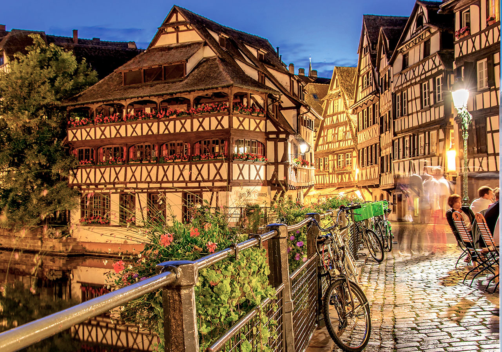
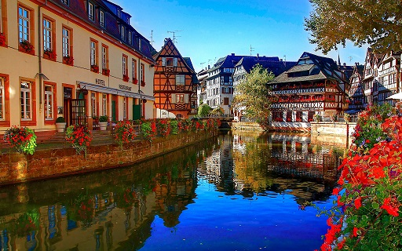
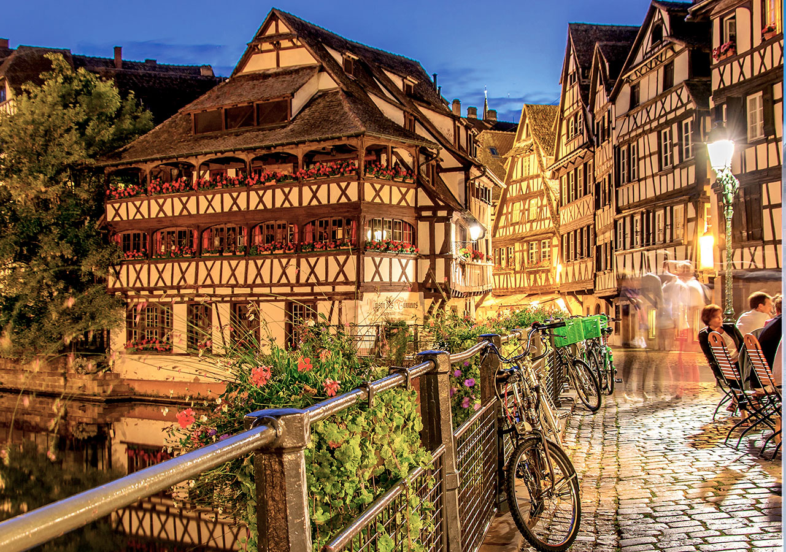
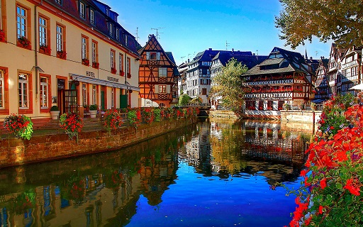
 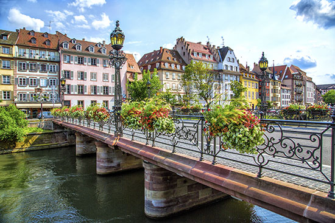
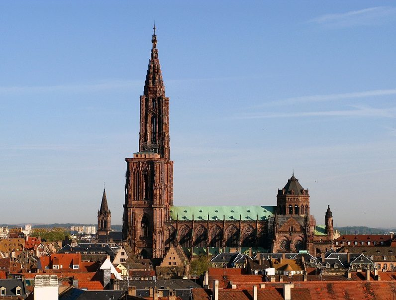
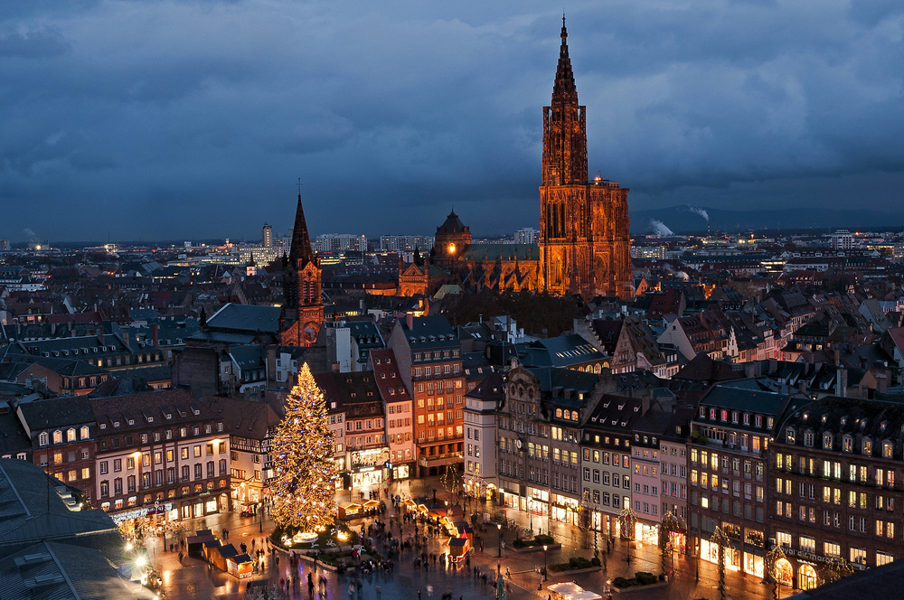
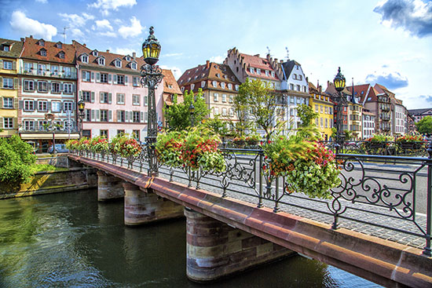
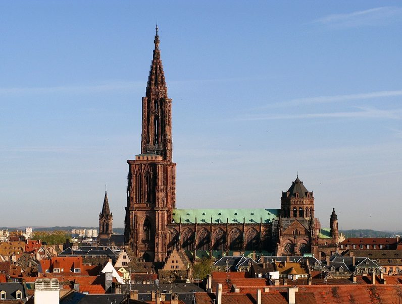
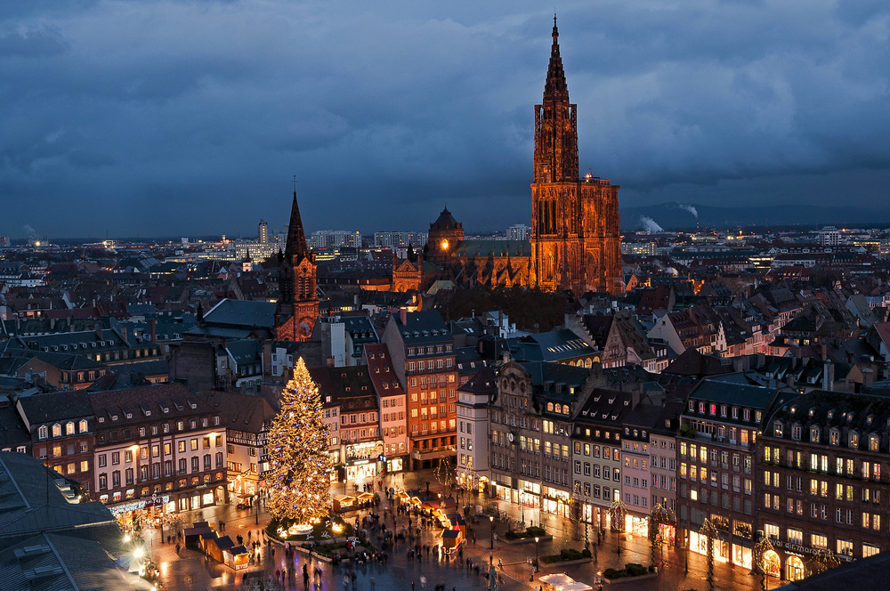
 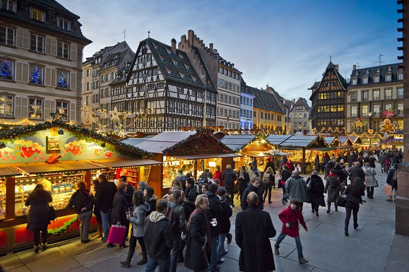
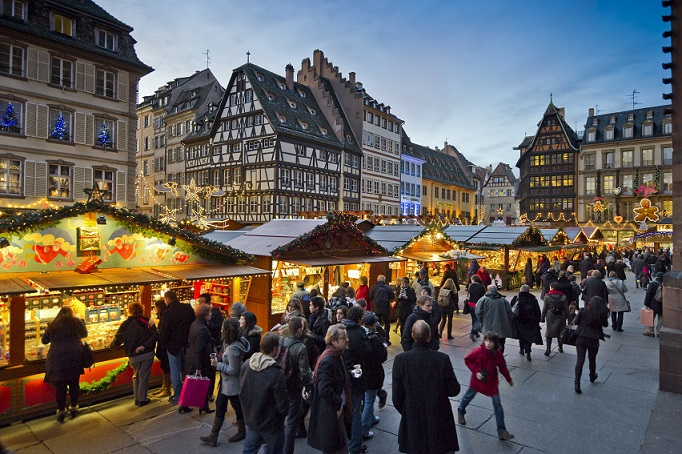